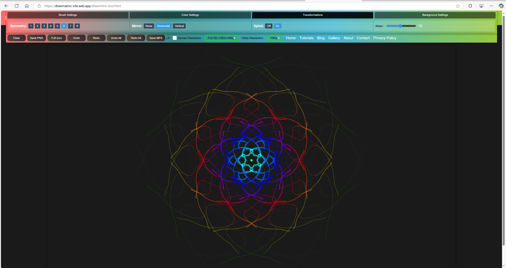

Drawmatinc Brush Stroke Patterns Drawing Tool Tutorial
Introduction
Welcome! Welcome! to the Drawmatinc Brush Stroke Patterns Drawing Tool! This tutorial will guide you through using this powerful tool to create stunning digital artwork. Whether you're a beginner or an experienced artist, you'll learn how to use its features like customizable brushes, symmetry, color options, and more to unleash your creativity.
Getting Started
Follow these steps to begin your artistic journey:
- Launch the Tool: Open the Drawing Tool page on the Drawmatinc website.
- Close the Welcome Screen: Click the "Start Creating" button on the welcome overlay to access the canvas and toolbar.
- Familiarize Yourself: Notice the toolbar at the top with actions (left) and options (right), and the canvas below it.
Tip: The welcome screen displays a random inspirational quote each time you load the tool!
Drawing Basics
Start creating your first artwork with these steps:
- Select a Brush: In the "Brush" tab (default), use the "Brush Type" dropdown to choose a brush (e.g., Wooly, Straws, Watercolor, Curly Wings).
- Adjust Brush Settings: Use the sliders for "Size," "Smooth," and "Opacity" to customize your brush stroke.
- Draw on the Canvas: Click and drag your mouse (or tap and drag on touch devices) on the canvas to draw.
Tip: Hold the mouse button longer to create continuous strokes!
Exploring Brush Types
The tool offers four unique brush styles, each with specific settings:
- Wooly: Creates web-like patterns. Adjust "Density" (number of strands), "Spread" (strand width), and "Wiggle" (randomness).
- Straws: Draws circles along your stroke. Tweak "Circle" (size) and "Border" (thickness).
- Watercolor: Mimics watercolor effects. Modify "Spread" (effect size) and "Bleed" (intensity).
- Curly Wings: Adds wing-like curls. Customize "Wing Size," "Curl Intensity," and "Wing Opacity."
Tip: Switch brushes mid-drawing to combine effects!
Using Colors
Enhance your artwork with color options:
- Selct number of Colors: Go to the "Color" tab. abd select number of colors you want to use in the brush. Customize brush colors using color pickers.
- Select sampling method: Select a "Sampling" method (e.g., Random, Spatial) to draw with its colors.
- Upload an Image: Click "Image" to upload a picture then select a "Sampling" method (e.g., Random, Spatial) to draw with its colors.
- Remove Image: Click "Remove" to revert to manual colors.
Tip: Sampling option works for both uploaded image and color pickers

Adding Symmetry and Effects
Create intricate patterns with these transformations:
- Symmetry: In the "Transformations" tab, click a number (1–8) under "Symmetry" to draw multiple copies around the canvas center.
- Mirror: Choose "Horizontal" or "Vertical" under "Mirror" to reflect your strokes.
- Spiral: Toggle "Spiral" to "On" and adjust "Steps" (5–20) for a spiral pattern. 
Tip: Combine symmetry and spiral for mesmerizing designs!
Customizing the Background
Set the stage for your artwork:
- Set a Color or gradient: In the "Background" tab, pick a color with the "Color" picker. For Gradient background mark Gradient toggle and select second color
- Add an Image: Upload an image with "Image" to use as the background.
- Make Transparent: Check "Transparent" for a clear background (great for PNG exports).
- Remove Image: Click "Remove" to revert to a solid color or transparency.

Managing Your Artwork
Use the action buttons to control your work:
- Clear: Erases the canvas entirely.
- Save: Downloads your artwork as a PNG file.
- Undo/Redo: Reverts or reapplies the last action (Ctrl+Z for Undo).
- Undo All/Redo All: Steps back or forward through all actions.
- Fullscreen: Expands the canvas (press F to toggle).
- Save Mp4: Downloads your artwork as a Mp4 video file.
Tip: In fullscreen, hover near the top to show the toolbar!
Advanced Tips
- Resolution: Choose "HD," "Full HD," or "4K" in the toolbar for different canvas sizes.
- Low Performance Mode: Enable this for smoother drawing on older devices (limits symmetry to 4 and disables spiral).
- Tooltips: Hover over buttons and options (or tap on mobile) for quick descriptions.